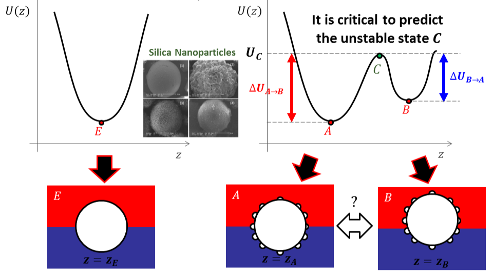
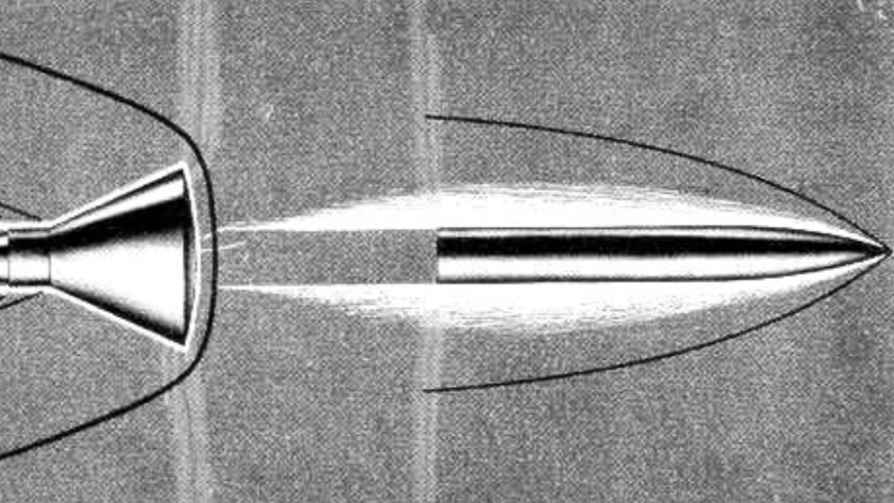
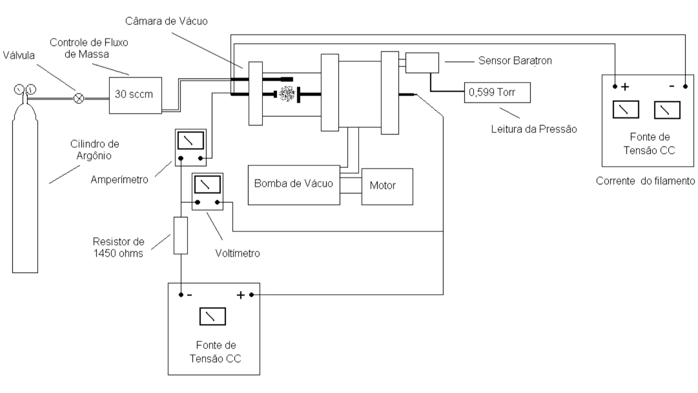

Research
C2 — Command and Control through Massive Aerospace Data Fusion
March 2025 – present
- Advanced Command and Control (C2) frameworks leveraging massive aerospace data fusion and high-performance computing architectures.
- Real-time information extraction and processing from multi-source sensor networks, including EO/IR, SAR, and LIDAR systems.
- Modernization of aerospace defense capabilities through the seamless integration of innovative data science and operational requirements.
ASA — Aerospace Simulation Environment
December 2020 – present
- Development of the ASA Aerospace Simulation Environment for evaluating complex military operational scenarios and tactical protocols.
- Integration of high-fidelity flight dynamics and aerospace models within a scalable, distributed computational architecture.
- Creation of a multipurpose simulation platform designed to meet both advanced academic research and strategic operational requirements.
Safe and Seamless Operation of Manned and Unmanned Aircraft in Shared
Airspace
November 2021 – January 2023
- Development of artificial intelligence and machine learning modules for the safe integration of autonomous aircraft into shared traffic environments.
- Implementation of long-range vision-based architectures for the detection and tracking of manned aircraft in diverse operational settings.
- Predictive modeling of trajectory dynamics using Graph Neural Networks and social navigation strategies for collision avoidance.
ITACOPTER 1 — Hexacopter for Civil Construction Monitoring
July 2015 – December 2015
- Design and development of the ITACOPTER 1 unmanned hexacopter for infrastructure monitoring and high-resolution mapping applications.
- Full system engineering including avionics integration, experimental flight testing, and operational protocol establishment.
- Integration of multi-sensor payloads for automated data collection and technical surveying of civil engineering projects.
Stochastic Transport Processes at Interfaces

May 2015 – August 2015
- Numerical modeling and stochastic analysis of transport processes at micro- and nanoscale fluid-solid interfaces.
- Investigation of Brownian Motion and the fundamental dynamics of colloidal particles in complex interfacial environments.
- Theoretical study of liquid-fluid and liquid-solid interactions to optimize mass and energy transport in nanoscale systems.
Automatic Data Acquisition in Plasma Tunnel Tests

August 2012 – July 2013
- Development and deployment of automatic data acquisition systems for high-temperature plasma environments to characterize ablative materials.
- Experimental investigation of aerospace-grade composite materials for thermal protection systems in re-entry vehicles.
- Characterization of thermo-structural performance under extreme heat flux conditions to improve spacecraft safety.
Thermionic Cathode Discharge in Low Pressure

August 2011 – July 2012
- Experimental analysis of thermionic cathode discharge mechanisms and plasma physics in low-pressure environments.
- Investigation of electron emission effects on plasma stability and characterization of resulting discharge phenomena.
- Study of physical parameters influencing thermionic emission to improve the efficiency of ion sources and plasma reactors.